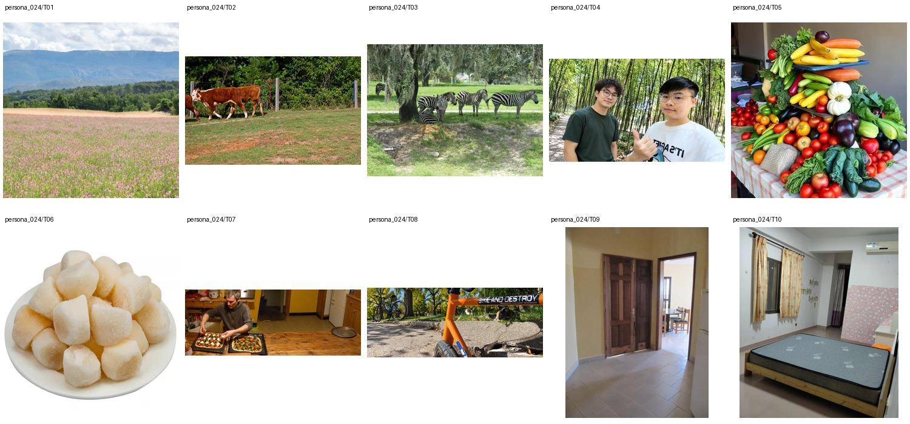

Irrigation efficiency coordinator for a regional sustainable agriculture nonprofit · Bachelor's degree in Environmental Science · 未提供数值年龄；按职业与教育背景推定为成年人
Tomiris spends her workdays visiting farms, checking soil moisture sensors, and helping growers cut water waste without sacrificing crop yields. At home, she unwinds with her husband over spicy ramen, steak experiments, and short cooking-fail videos, while saving DIY paint ideas for their slowly evolving house. She has a soft spot for baby videos, twin-mom accounts, gentle faith reflections, and condolence posts that feel sincere rather than performative. Unexpectedly, she keeps a small notebook of cloud sketches and can identify local storm patterns faster than most weather apps.
Add 4 · Background 6 · Remove 2 · Restyle 1 · Retouch 1 · Attribute Modification 5 · Replace 1 · Move 1
上层v3表达个性化编辑请求，底层列出操作、个性化参数及具体解析。125项global均不绑定题材或具体图片，由请求选择；人物基本信息、非global知识和图片保持不变。历史版本仅存internal；长期日常历史尚未构建。
整组图片与基础人物信息（已清理、统一字段）

{
"source": {
"dataset": "bowen-upenn/PersonaMem-v3",
"revision": "7b00a090b35b7293e6efeeb19494207f32b5a9ee",
"source_persona_id": "102",
"path": "backend/102/profile.json",
"raw_sha256": "52cae5283cf26833bd67c3d9bb22c5fe2ba0515a57cf99dc7222f227e19830d9"
},
"basic_profile": {
"name": "Tomiris Ospanova",
"age": null,
"gender": "cisgender female, heterosexual",
"nationality": null,
"languages": [],
"location": {
"city": null,
"region": null,
"country": null,
"description": null
},
"education": {
"degrees": [
"Bachelor's degree in Environmental Science"
],
"fields": [],
"institutions": []
},
"occupation": {
"title": "Irrigation efficiency coordinator for a regional sustainable agriculture nonprofit",
"organization": null,
"industry": null,
"status": null
},
"relationship_status": null,
"summary": null,
"biography": "Tomiris spends her workdays visiting farms, checking soil moisture sensors, and helping growers cut water waste without sacrificing crop yields. At home, she unwinds with her husband over spicy ramen, steak experiments, and short cooking-fail videos, while saving DIY paint ideas for their slowly evolving house. She has a soft spot for baby videos, twin-mom accounts, gentle faith reflections, and condolence posts that feel sincere rather than performative. Unexpectedly, she keeps a small notebook of cloud sketches and can identify local storm patterns faster than most weather apps.",
"hobbies": [],
"personality": {
"traits": [],
"values": [],
"quirks": [],
"big_five": {
"openness": "medium",
"conscientiousness": "medium",
"extraversion": "medium",
"agreeableness": "medium",
"neuroticism": "high"
}
},
"additional": {
"social_connections": [
{
"friend_id": "friend_1",
"display_name": "Tamila Omarova",
"relationship_depth": "close",
"shared_interests": [
"spicy ramen",
"home DIY",
"baby videos"
]
},
{
"friend_id": "friend_2",
"display_name": "Talgat Orazbayev",
"relationship_depth": "close",
"shared_interests": [
"sustainable agriculture",
"local community",
"steak experiments"
]
},
{
"friend_id": "friend_3",
"display_name": "Aigerim Otegenova",
"relationship_depth": "close",
"shared_interests": [
"church",
"gentle faith reflections",
"cooking-fail videos"
]
},
{
"friend_id": "friend_4",
"display_name": "Tamila Orunbaeva",
"relationship_depth": "acquaintance",
"shared_interests": [
"mom-life accounts",
"baby videos"
]
},
{
"friend_id": "friend_5",
"display_name": "Timur Omarkulov",
"relationship_depth": "acquaintance",
"shared_interests": [
"soil moisture sensors",
"water conservation",
"local sustainability"
]
},
{
"friend_id": "friend_6",
"display_name": "Tolkyn Oralbayeva",
"relationship_depth": "acquaintance",
"shared_interests": [
"food threads",
"recipe creators",
"spicy noodles"
]
},
{
"friend_id": "friend_7",
"display_name": "Tair Orazalin",
"relationship_depth": "acquaintance",
"shared_interests": [
"church-adjacent events",
"community contacts"
]
},
{
"friend_id": "friend_8",
"display_name": "Togzhan Ospanbek",
"relationship_depth": "distant",
"shared_interests": [
"condolence posts",
"extended family"
]
},
{
"friend_id": "friend_9",
"display_name": "Saule Ongarbayeva",
"relationship_depth": "distant",
"shared_interests": [
"home paint ideas",
"DIY browsing"
]
},
{
"friend_id": "friend_10",
"display_name": "Yerbol Otanov",
"relationship_depth": "distant",
"shared_interests": [
"regional farming",
"water efficiency"
]
}
]
}
},
"adult_eligibility": {
"status": "adult",
"basis": "adult_career_and_education_context",
"inferred": true,
"numeric_age_provided": false
},
"persona_id": "persona_024"
}